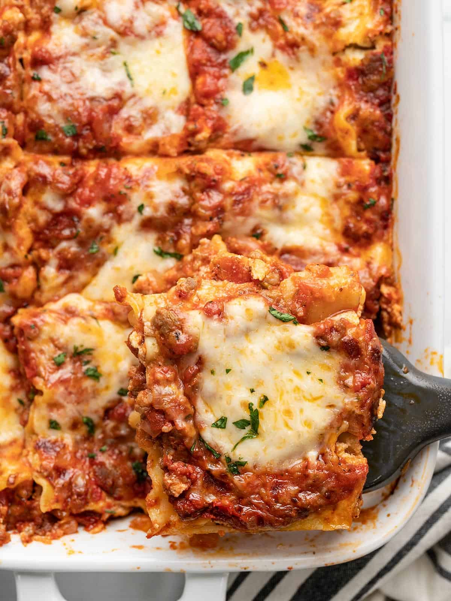

Lasagna
Recipe from budgetbytes as part of a practice assignment.

Description
Lasagna is the perfect trifecta of ingredients: pasta, tomatoes, and cheese. Or, more specifically, the three main components of a classic lasagna are a red meat sauce, lasagna noodles, and a mix of ricotta and other cheeses. You can swap out any of these three components to make different styles of lasagna (white lasagna, vegetarian lasagna, spinach lasagna, etc.) but the recipe we have for you today is a classic lasagna with a tomato-based meat sauce, ricotta cheese blend, and lasagna noodles.
Ingredients
- 1 lb. Italian sausage ($3.99)
- 1 yellow onion ($0.37)
- 1 28oz. can crushed tomatoes ($1.69)
- 3 oz. tomato paste (about 5 Tbsp) ($0.45)
- Tbsp Italian seasoning ($0.30)
- 2 cups whole milk ricotta ($3.19)
- 1 cup shredded Italian cheese blend ($1.25)
- 1 large egg ($0.21)
- 1/4 tsp freshly cracked pepper ($0.02)
- 9 lasagna noodles (about ½ lb.) ($0.90)
- 2 cups shredded mozzarella ($2.49)
- 1 Tbsp chopped fresh parsley (optional garnish) ($0.10)
Steps
- Add the Italian sausage to a deep skillet and cook over medium heat until browned. While the sausage is cooking, dice the onion and then add it to the skillet with the sausage. Continue to stir and cook until the onion has softened (about 3 minutes).
- Add the crushed tomatoes, tomato paste, and Italian seasoning to the skillet and stir to combine. Partially cover the skillet with a lid, turn the heat down to medium-low, and let the sauce simmer while you prepare the other ingredients. Stir the saue occasionally as it cooks.
- Preheat the oven to 350ºF. Add the ricotta cheese, Italian cheese blend, egg, and pepper to a bowl, then stir to combine. Set the cheese mixture aside.
- Fill a large pot with water and add ½ Tbsp salt. Bring the pot of water to a boil. Once boiling, add the lasagna noodles and cook just until tender (about 8 minutes). Drain the noodles in a colander.
- Spread about 1 cup of sauce over the bottom of a 9×13-inch casserole dish. Lay three lasagna noodles on top of the sauce. Spread ⅓ of the cheese mixture evenly over the noodles. Repeat the layers (sauce, noodles, cheese) two more times. Finish with the remaining sauce, then top with the shredded mozzarella.
- Cover the lasagna with foil and bake for 40 minutes. After 40 minutes, remove the foil, turn the oven from bake to broil, and broil for about 5 minutes or just until the cheese gets a little brown on top. Watch the lasagna closely as it broils!
- Top the lasagna with chopped parsley if desired. Slice the lasagna into nine (or twelve) pieces and serve!